ORIENT
Learn the record and witness loop
5A programming puzzle world in 75 cases
At midnight, a city receives a complete record of tomorrow's disasters. Build the engine that opens it, repair the smallest causes, and discover who decided that tomorrow was allowed to have only one history.
BundleId sha256:517038cd…0514
CONTINUITY DESK / INTAKE
You join the municipal Continuity Desk. Every incident is an immutable causal record; every proposed repair creates a replayable branch. Correctness opens the city. Better explanations improve your score.
CASE CATALOG / PUBLIC
Learn the record and witness loop
5Change the smallest cause
24Reconstruct conflicting histories
15Program bounded event streams
14Rebuild supported topology
11Synchronize without forgetting
3Prove local policies globally
2Audit uniqueness
1PARTICIPANT LOOP / DETERMINISTIC
Implement the Causal Reduction Engine, inspect the public record, construct bounded programs or certificates, and submit canonical witnesses to a deterministic offline verifier.
$ player.py inspect desk ORIENT.001
case visible / task letter loaded
$ player.py verify desk witness.json
valid / receipt retained / unlock granted
$ player.py replay desk
byte-for-byte receipt reproducedRELEASE / 2.1

THE RECORD IS READY